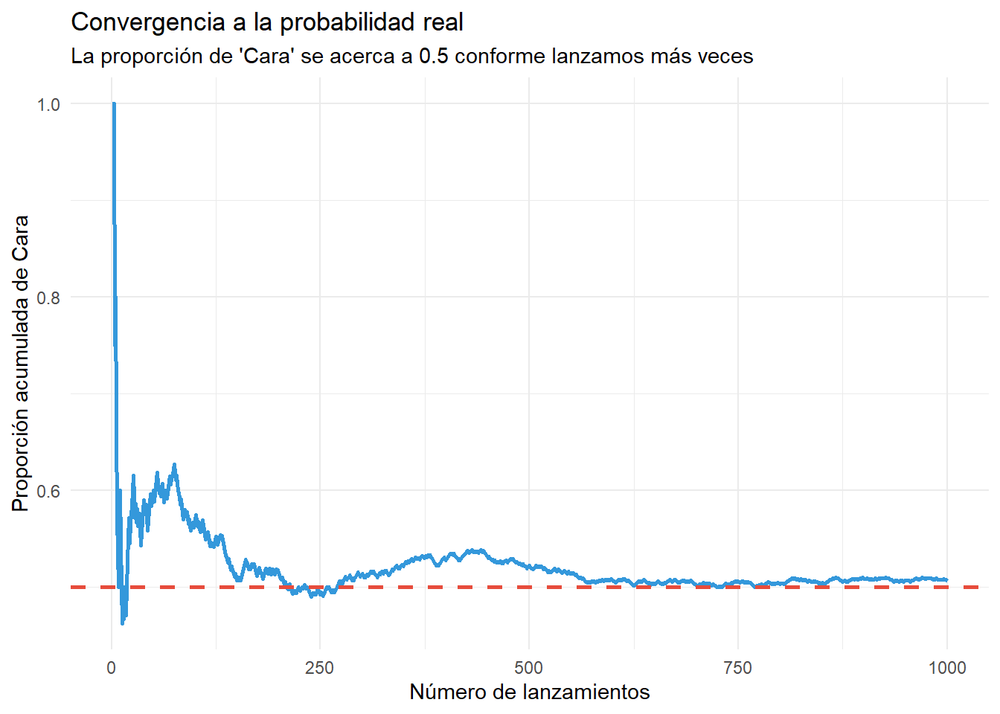
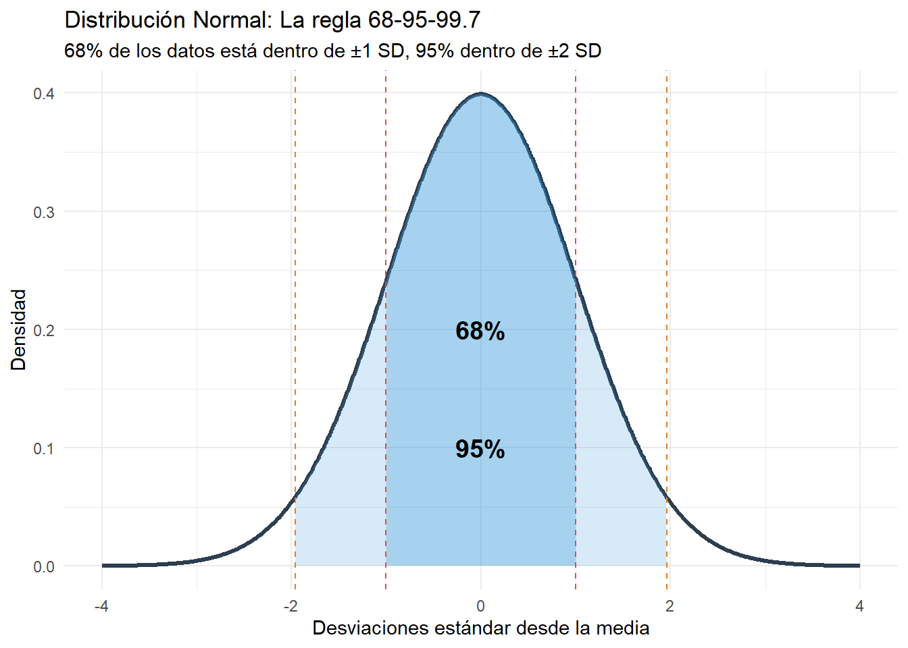
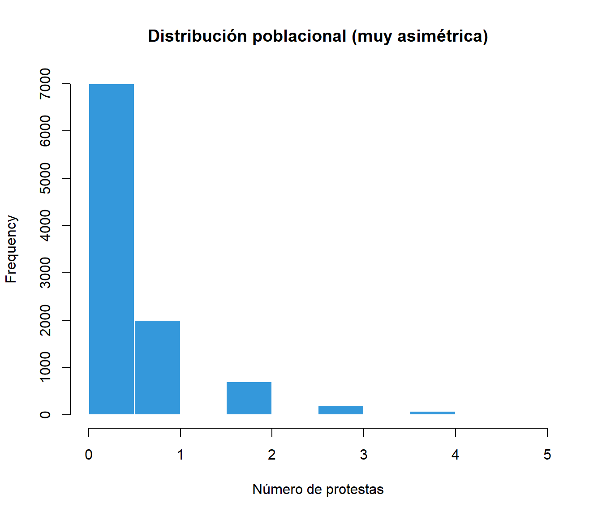
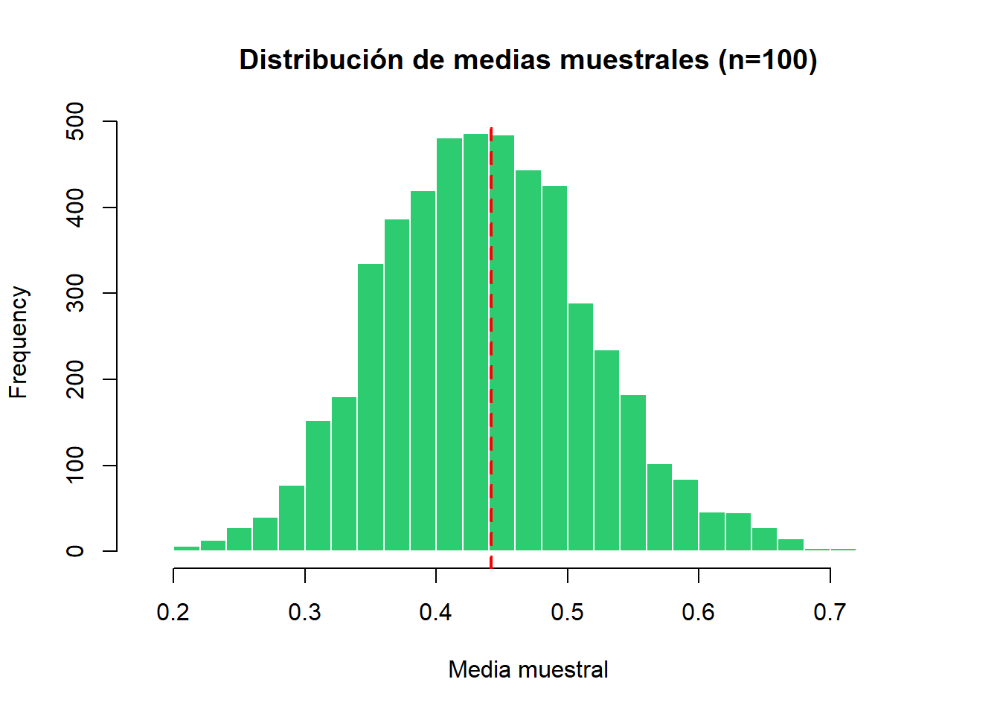
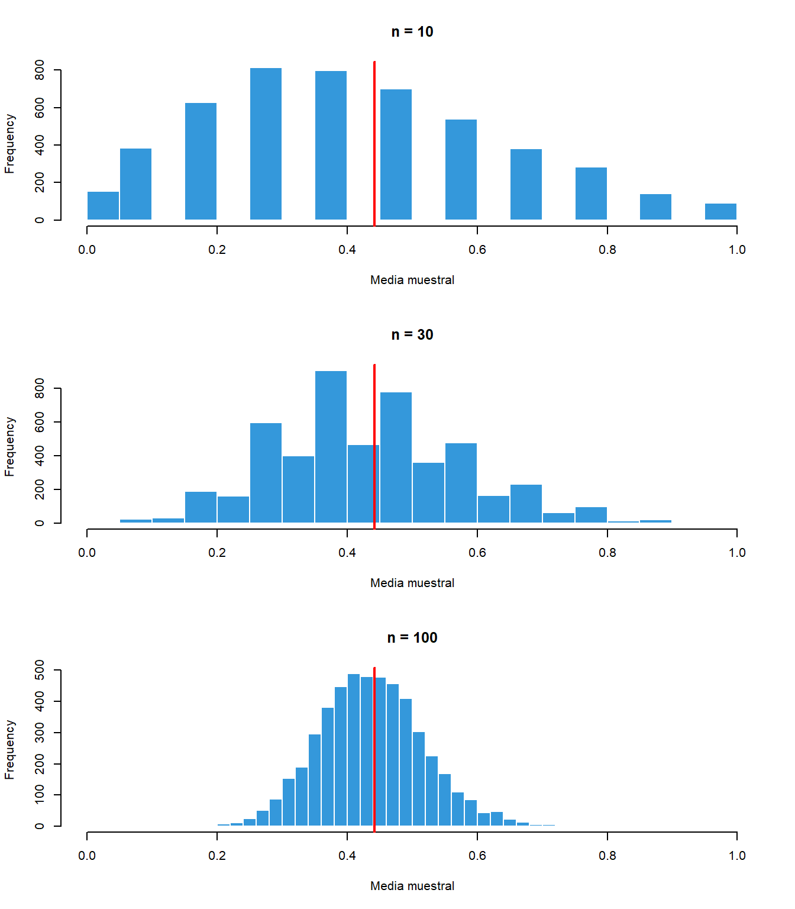

Comprender qué es la probabilidad y para qué sirve en investigación social
Calcular probabilidades básicas y aplicar reglas fundamentales
Distinguir entre variables aleatorias discretas y continuas
Usar la distribución Normal para responder preguntas sobre poblaciones
Entender el Teorema del Límite Central y por qué es tan importante
7.1 ¿Para qué necesitamos probabilidad?
La investigación social enfrenta constantemente la incertidumbre. Cuando encuestamos a 1,500 votantes para estimar el apoyo a un candidato, no conocemos las preferencias de los millones que no fueron encuestados. Cuando comparamos dos políticas públicas, no podemos estar 100% seguros de que la diferencia observada sea real.
La probabilidad nos da un lenguaje para cuantificar esta incertidumbre. No la elimina (eso es imposible), pero nos permite hacer afirmaciones precisas sobre qué tan confiables son nuestras conclusiones.
7.2 Conceptos básicos de probabilidad
7.2.1 ¿Qué es una probabilidad?
Una probabilidad es un número entre 0 y 1 que cuantifica qué tan probable es que ocurra algo:
Probabilidad
Significado
0
Imposible
0.25
Poco probable
0.50
Igual de probable que improbable
0.75
Bastante probable
1
Seguro
7.2.2 Ejemplo: Interpretando probabilidades
Si en una encuesta de 1,200 personas, 360 declaran que votarán por un partido:
# Calculamos la probabilidad (proporción) de votar por ese partidoapoyos <-360total <-1200probabilidad <- apoyos / totalcat("Probabilidad estimada de votar por el partido:", probabilidad, "\n")
Probabilidad estimada de votar por el partido: 0.3
cat("Esto equivale al", probabilidad *100, "%")
Esto equivale al 30 %
Importante: Esto NO significa que exactamente 30% de la población votará por el partido. Es nuestra mejor estimación basada en la muestra, con cierto nivel de incertidumbre.
7.2.3 ¿Cómo se interpretan las probabilidades?
Interpretación frecuentista (la más común): La probabilidad es la proporción de veces que algo ocurriría si repitiéramos el experimento muchas veces.
Por ejemplo, decir que la probabilidad de “cara” al lanzar una moneda es 0.5 significa que, si lanzáramos la moneda millones de veces, aproximadamente la mitad serían caras.

La proporción converge a 0.5 conforme aumentan los lanzamientos
7.3 Reglas básicas de probabilidad
7.3.1 Regla del complemento: Lo que NO ocurre
Si la probabilidad de que algo ocurra es p, entonces la probabilidad de que NO ocurra es 1 - p.
# Si la probabilidad de votar es 52%p_vota <-0.52# Entonces la probabilidad de abstenerse es:p_abstiene <-1- p_votacat("P(abstención) =", p_abstiene, "o", p_abstiene *100, "%")
P(abstención) = 0.48 o 48 %
7.3.2 Regla de la suma: Una cosa U otra
Si dos eventos no pueden ocurrir al mismo tiempo (son “mutuamente excluyentes”), la probabilidad de que ocurra uno u otro es la suma de sus probabilidades.
# Un votante puede elegir izquierda, centro, o derecha (solo una opción)p_izquierda <-0.30p_centro <-0.25p_derecha <-0.45# Probabilidad de votar izquierda O centrop_izq_o_centro <- p_izquierda + p_centrocat("P(izquierda O centro) =", p_izq_o_centro)
P(izquierda O centro) = 0.55
7.3.3 Regla del producto: Una cosa Y otra
Si dos eventos son independientes (uno no afecta al otro), la probabilidad de que ocurran ambos es el producto de sus probabilidades.
# Si encuestamos a dos personas al azar# P(ambos votan izquierda) = P(primero izq) × P(segundo izq)p_izquierda <-0.30p_ambos_izq <- p_izquierda * p_izquierdacat("P(ambos votan izquierda) =", p_ambos_izq)
P(ambos votan izquierda) = 0.09
7.3.4 Probabilidad condicional: Dado que ya sé algo
A veces queremos saber la probabilidad de algo dado que ya sabemos otra cosa.
TipEjemplo: Voto por género
En una encuesta de 500 personas:
Aprueba
Rechaza
Total
Hombres
80
120
200
Mujeres
150
150
300
Total
230
270
500
Pregunta: Entre las mujeres, ¿qué proporción aprueba?
# P(Aprueba | Mujer) = Mujeres que aprueban / Total de mujeresp_aprueba_dado_mujer <-150/300cat("P(Aprueba | Mujer) =", p_aprueba_dado_mujer, "\n")
P(Aprueba | Mujer) = 0.5
cat("Es decir, el", p_aprueba_dado_mujer *100, "% de las mujeres aprueba")
Es decir, el 50 % de las mujeres aprueba
Compara con la población general:
# P(Aprueba) = Total que aprueba / Totalp_aprueba <-230/500cat("P(Aprueba) en general =", p_aprueba, "\n")
P(Aprueba) en general = 0.46
cat("Es decir, el", p_aprueba *100, "% de la población aprueba")
Es decir, el 46 % de la población aprueba
Las mujeres aprueban más que la población general (50% vs 46%).
AdvertenciaError común: No confundas P(A|B) con P(B|A)
Este error es muy común. Siempre pregúntate: “¿Cuál es mi grupo de referencia?”
Nota🎓 Avanzado: Fórmulas de probabilidad
Regla del complemento:\[P(\text{no } A) = 1 - P(A)\]
Regla de la suma (eventos mutuamente excluyentes):\[P(A \text{ o } B) = P(A) + P(B)\]
Regla de la suma (eventos no excluyentes):\[P(A \text{ o } B) = P(A) + P(B) - P(A \text{ y } B)\]
Regla del producto (eventos independientes):\[P(A \text{ y } B) = P(A) \times P(B)\]
Probabilidad condicional:\[P(A|B) = \frac{P(A \text{ y } B)}{P(B)}\]
7.4 Variables aleatorias
Una variable aleatoria es algo que toma diferentes valores con diferentes probabilidades. Son la conexión entre probabilidad y datos reales.
7.4.1 Variables discretas vs continuas
Tipo
Qué son
Ejemplos
Discretas
Toman valores específicos y contables
Número de protestas en un mes, respuesta en escala Likert (1-5), votos obtenidos
Continuas
Pueden tomar cualquier valor en un rango
Porcentaje de apoyo, ingreso mensual, tiempo hasta un evento
7.4.2 Ejemplo de variable discreta
# Simulamos: número de protestas por mes en una ciudadset.seed(456)protestas <-rpois(1000, lambda =2.5) # Promedio de 2.5 protestas/mes# Tabla de frecuenciastabla <-table(protestas)cat("Frecuencias observadas:\n")
# Simulamos: porcentaje de votos para un candidato a alcaldeset.seed(789)votos <-rnorm(1000, mean =35, sd =5)# ¿Qué proporción obtiene entre 30% y 40% de los votos?prop_30_40 <-mean(votos >=30& votos <=40)cat("Proporción de candidatos con 30-40% de votos:", round(prop_30_40, 2))
Proporción de candidatos con 30-40% de votos: 0.69
7.5 La distribución Normal
La distribución Normal (o “campana de Gauss”) es la más importante en estadística. Muchos fenómenos naturales y sociales siguen aproximadamente esta distribución.
7.5.1 Características de la Normal
La distribución Normal tiene forma de campana simétrica:
La mayoría de los valores están cerca del centro (la media)
Los valores extremos son menos frecuentes
Es simétrica: igual de probable estar por arriba que por debajo de la media

Distribución Normal: La regla 68-95-99.7
7.5.2 La regla 68-95-99.7
En una distribución Normal:
Rango
Porcentaje de datos
Media ± 1 desviación estándar
68%
Media ± 2 desviaciones estándar
95%
Media ± 3 desviaciones estándar
99.7%
7.5.3 Ejemplo: Alturas de personas
Las alturas de hombres adultos chilenos se distribuyen aproximadamente Normal con media 170 cm y desviación estándar 7 cm.
# ¿Qué proporción de hombres mide más de 180 cm?prop_mayor_180 <-1-pnorm(180, mean =170, sd =7)cat("Proporción que mide más de 180 cm:", round(prop_mayor_180, 3), "\n")
Proporción que mide más de 180 cm: 0.077
cat("Es decir, aproximadamente el", round(prop_mayor_180 *100, 1), "%")
Es decir, aproximadamente el 7.7 %
# ¿Qué proporción mide entre 165 y 175 cm?prop_165_175 <-pnorm(175, mean =170, sd =7) -pnorm(165, mean =170, sd =7)cat("Proporción que mide entre 165 y 175 cm:", round(prop_165_175, 3), "\n")
Proporción que mide entre 165 y 175 cm: 0.525
cat("Es decir, aproximadamente el", round(prop_165_175 *100, 1), "%")
Es decir, aproximadamente el 52.5 %
7.5.4 Funciones de R para la distribución Normal
R tiene cuatro funciones para trabajar con la Normal:
Función
Qué hace
Ejemplo
pnorm(x)
Probabilidad de estar por debajo de x
pnorm(180, mean=170, sd=7) = 0.92
qnorm(p)
¿Qué valor tiene p% de datos por debajo?
qnorm(0.90, mean=170, sd=7) = 179
dnorm(x)
Altura de la curva en x
Para graficar
rnorm(n)
Genera n valores aleatorios
rnorm(100, mean=170, sd=7)
# ¿Cuál es el percentil 90 de alturas?# Es decir, ¿qué altura es mayor que el 90% de los hombres?percentil_90 <-qnorm(0.90, mean =170, sd =7)cat("El percentil 90 de alturas es", round(percentil_90, 1), "cm\n")
El percentil 90 de alturas es 179 cm
cat("Es decir, el 90% de los hombres mide menos de", round(percentil_90, 1), "cm")
Es decir, el 90% de los hombres mide menos de 179 cm
7.6 El Teorema del Límite Central
Este es probablemente el resultado más importante de toda la estadística. Fundamenta toda la inferencia que veremos en los próximos capítulos.
7.6.1 ¿Qué dice el teorema?
Si tomamos muchas muestras de cualquier población y calculamos la media de cada una:
Las medias se distribuyen de forma Normal (aunque la población original no lo sea)
Están centradas en la media verdadera de la población
Su dispersión disminuye con muestras más grandes
Esto funciona siempre que la muestra sea suficientemente grande (típicamente n ≥ 30).
7.6.2 ¿Por qué es tan importante?
Porque nos permite usar la distribución Normal para hacer inferencia, sin importar cómo se vean los datos originales.
7.6.3 Demostración con simulación
Veamos el teorema en acción con un ejemplo extremo: participación en protestas.
# Población muy asimétrica: mayoría no participa (0), pocos participanset.seed(2024)poblacion <-c(rep(0, 7000), rep(1, 2000), rep(2, 700),rep(3, 200), rep(4, 80), rep(5, 20))mu_poblacion <-mean(poblacion)cat("Media poblacional:", round(mu_poblacion, 2), "\n")
Media poblacional: 0.44
cat("La distribución es MUY asimétrica (mayoría son ceros)\n")
La distribución es MUY asimétrica (mayoría son ceros)
# Visualizamos la poblaciónhist(poblacion, main ="Distribución poblacional (muy asimétrica)",xlab ="Número de protestas", col ="#3498db", border ="white")

Ahora tomamos muchas muestras y calculamos sus medias:
# Tomamos 5000 muestras de n=100 y calculamos la media de cada unaset.seed(2024)medias_muestrales <-replicate(5000, mean(sample(poblacion, 100, replace =TRUE)))# Las medias SÍ se distribuyen Normalhist(medias_muestrales, breaks =40,main ="Distribución de medias muestrales (n=100)",xlab ="Media muestral", col ="#2ecc71", border ="white")abline(v = mu_poblacion, col ="red", lwd =2, lty =2)

cat("Media de las medias muestrales:", round(mean(medias_muestrales), 3), "\n")
Media de las medias muestrales: 0.443
cat("(Muy cerca de la media poblacional:", round(mu_poblacion, 3), ")")
(Muy cerca de la media poblacional: 0.442 )
Aunque la población original es extremadamente asimétrica, las medias muestrales se distribuyen de forma Normal.
7.6.4 Efecto del tamaño de muestra
Muestras más grandes producen distribuciones de medias más “apretadas”:

cat("Desviación estándar de las medias muestrales:\n")
Desviación estándar de las medias muestrales:
cat("n = 10: ", round(sd(medias_n10), 4), "\n")
n = 10: 0.2517
cat("n = 30: ", round(sd(medias_n30), 4), "\n")
n = 30: 0.1477
cat("n = 100:", round(sd(medias_n100), 4), "\n")
n = 100: 0.0802
cat("\nMuestras más grandes → Estimaciones más precisas")
Muestras más grandes → Estimaciones más precisas
Nota🎓 Avanzado: Distribución Binomial
La distribución binomial modela el número de “éxitos” en n ensayos independientes, cada uno con probabilidad p de éxito.
Por ejemplo, si encuestamos a 1000 personas y la probabilidad real de apoyo es 0.40:
n <-1000p <-0.40# Valor esperadomedia <- n * p# Desviación estándarsd <-sqrt(n * p * (1- p))cat("Valor esperado:", media, "personas apoyarán\n")
Esto explica por qué la dispersión disminuye con √n.
Resumen: Conceptos clave
7.6.6 Vocabulario esencial
Concepto
Significado
Probabilidad
Número entre 0 y 1 que cuantifica qué tan probable es algo
Variable aleatoria
Algo que toma diferentes valores con diferentes probabilidades
Distribución Normal
Distribución en forma de campana, base de la inferencia
Teorema del Límite Central
Las medias muestrales siempre se distribuyen Normal
7.6.7 Ideas principales
La probabilidad cuantifica incertidumbre: Nos permite hacer afirmaciones precisas sobre qué tan seguros estamos
La distribución Normal es fundamental: La regla 68-95-99.7 aplica a muchos fenómenos
El TLC es la base de la inferencia: Justifica usar la Normal para analizar muestras
7.6.8 Funciones de R
Función
Uso
pnorm(x, mean, sd)
Probabilidad de estar por debajo de x
qnorm(p, mean, sd)
Valor correspondiente al percentil p
rnorm(n, mean, sd)
Genera n valores aleatorios de una Normal
Lecturas recomendadas
Fundamentos de teoría de probabilidad:
Agresti, A., & Finlay, B. (2009). Statistical Methods for the Social Sciences (4th ed.). Pearson. → Capítulo 4 ofrece introducción accesible a distribuciones de probabilidad.
Aplicaciones en ciencias sociales:
Llaudet, E., & Imai, K. (2022). Data Analysis for Social Science: A Friendly and Practical Introduction. Princeton University Press. → Capítulo 6 conecta teoría de probabilidad con aplicaciones prácticas.
Recurso complementario de acceso libre:
Diez, D., Barr, C., & Çetinkaya-Rundel, M. (2019). OpenIntro Statistics (4th ed.). [Disponible gratis en https://www.openintro.org/book/os/] → Capítulo 3 sobre distribuciones de variables aleatorias.
Ejercicios
1. Probabilidades básicas
En una encuesta, 45% apoya la política A, 30% apoya la política B, y 15% apoya ambas.
¿Cuál es la probabilidad de apoyar A o B (o ambas)?
Si alguien apoya B, ¿cuál es la probabilidad de que también apoye A?
¿Son A y B independientes? ¿Por qué?
2. Distribución Normal
Los puntajes de confianza institucional se distribuyen Normal con media 50 y desviación estándar 12.
¿Qué proporción de personas tiene puntaje mayor a 60?
¿Qué proporción tiene puntaje entre 40 y 65?
¿Cuál es el puntaje correspondiente al percentil 90?
Si seleccionas 100 personas al azar, ¿cuántas esperarías con puntaje menor a 35?
3. Teorema del Límite Central
Tienes una población con distribución muy asimétrica (ingresos).